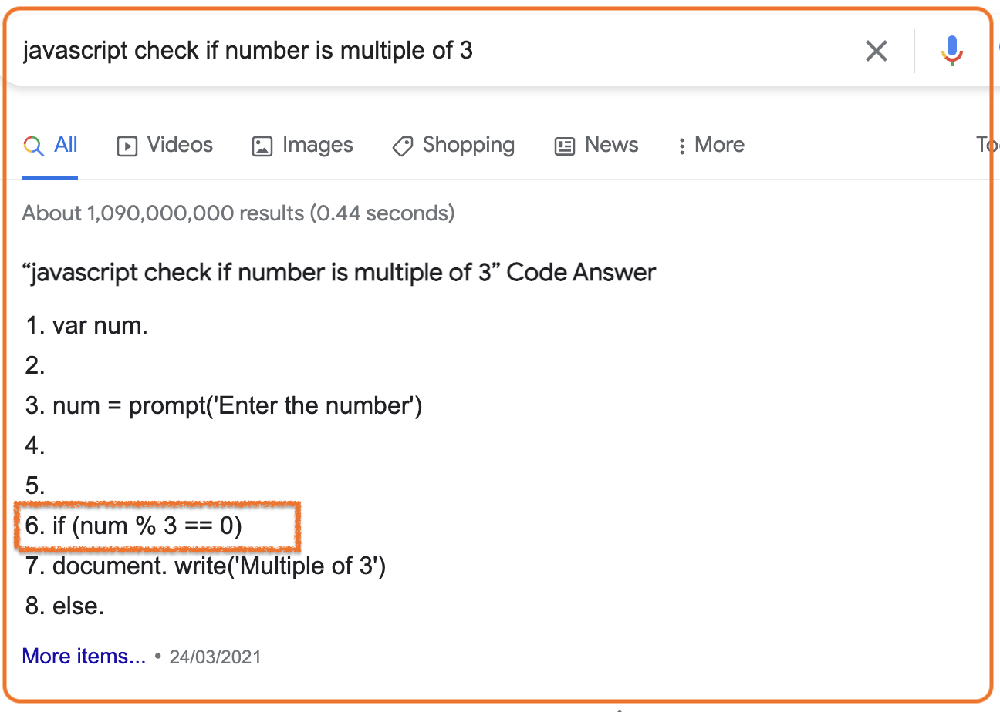
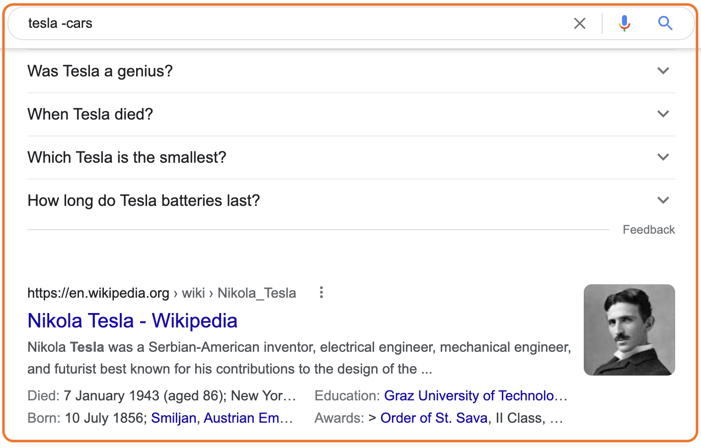
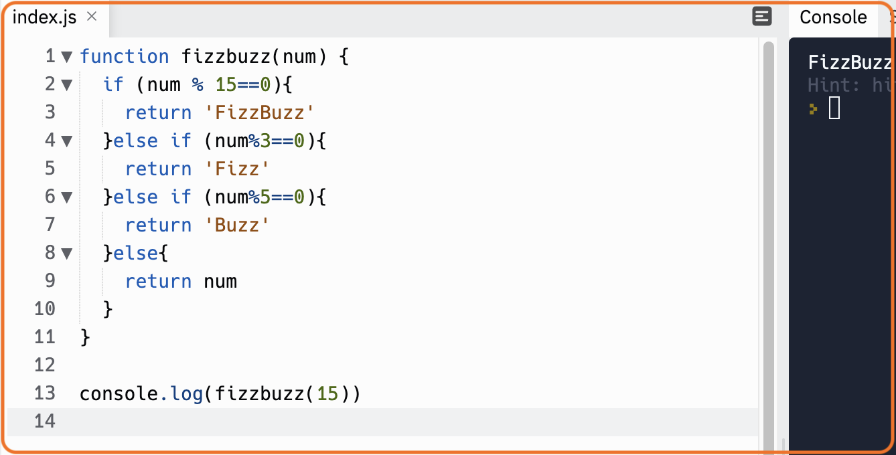
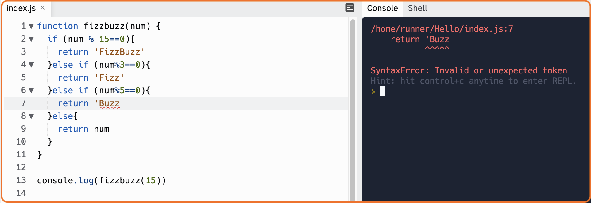

Problem solving is one of the essential skills of a good programmer. Its process includes defining a problem,
identifying the cause of the problem, selecting alternatives for a solution and finally implementing it.
These a some of the problem solving techniques and some of them, such as Console.logging and error messages, are
are focused exclusively on programming problems:
Let’s solve a simple version of a loved by everyone exercise FizzBuzz using each of those techniques. It takes in a number and for multiples of 3 prints 'Fizz', for multiples of 5 prints 'Buzz'. For numbers that are multiples of both 3 and 5 prints 'FizzBuzz'.
Pseudocode is a step-by-step written outline of your code that you transcribe into a programming language. Basically, it’s an English translation of your code. Try to keep it simple and concise.
//DECLARING FUNCTION THAT RETURNS OUR NUMBER FIZZBUZZED
function fizzbuzz(num) {
//returning “Fizz” if number is a multiple of 3
//returning “5Buzz” if number is a multiple of 5
//returning “FizzBuzz” if number is a multiple of 15
}
NOW how do we return a multiple of 3 and 5? Let’s B̶a̶c̶k̶R̶u̶b̶ Google it!
And there we get it straight away. If only it was always so easy!
There are a few tips you could use to make your Google search better though:
Use quotes to match exact phrases:
“Array.push()”
Exclude some words using -operator:

Find a website similar to another website:
related:[yourwebsite]
related:YouTube.com //Vimeo
Console.logging is the method I personally use the most. I like to break my code in tiny little steps and solve them little by little. It helps a lot, especially when you are just starting to learn how to code to see where you made a mistake and you can always go back and try something different.

Looking at this piece of code we don’t see any errors in our console but we understand that it doesn’t give us the result we want and instead of ‘FizzBuzz’ we’re getting ‘Fizz’.
What might be the reason for that? It’s time to ask rubber ducky for help!
Of course this method doesn’t expect you to talk to toys even though nobody stops you. The whole idea behind it is to be able to ask the right question.
Charles Kettering, who was head of research at General Motors from 1920 to 1947 said “A Problem Well Stated is Half Solved” .
We can be stuck on a problem for a long time without realising that we don’t even know what the real problem is. So identifying it is a first step to solving it.
In our code we’re getting Fizz that we’re supposed to get for number 3, instead of FizzBuzz for given number 15. The reason for it is control flow and how the code is being run, it always starts at the top, so in this case because 15 is a multiple of 3 as well it returns True for the first statement and finishes the loop. So now that we know what’s wrong we can just change the order of our code and see if it works.
And it works! Thank you Ducky!
How can there be programming without errors? Experiencing different types of errors in programming is a huge part of the development process. The best developers become comfortable navigating the bugs they create and quickly fixing them.
There are a few types of errors:
The one you’ll meet the most when you start programming is SyntaxError and TypeError.
Here’s an example of SyntaxError, you forget one quotation mark and your code doesn’t work anymore. But it’s okay it happens to everyone and you can always see in the console what line has an error. So good luck debugging!
You’ve tried all these methods and nothing works? Then it’s time to ask for help. You can ask your friend, your teacher, your colleague or go and post your question on Stack Overflow(in case the answer isn’t already there). There’s nothing wrong with asking for help so don’t hesitate and do that instead of being stuck on a problem for hours. Make sure you’ve already talked to rubber ducky and have the right question to ask!
Another good way to problem solve is to reflect on what you’ve done. You can get a better understanding of the problem if you look at the whole code and analyse your previous actions rather than being stuck on one small part of it. It’s helpful to take a break from a screen and distract yourself with some manual tasks like doing dishes or gardening to get an insight on your problem.